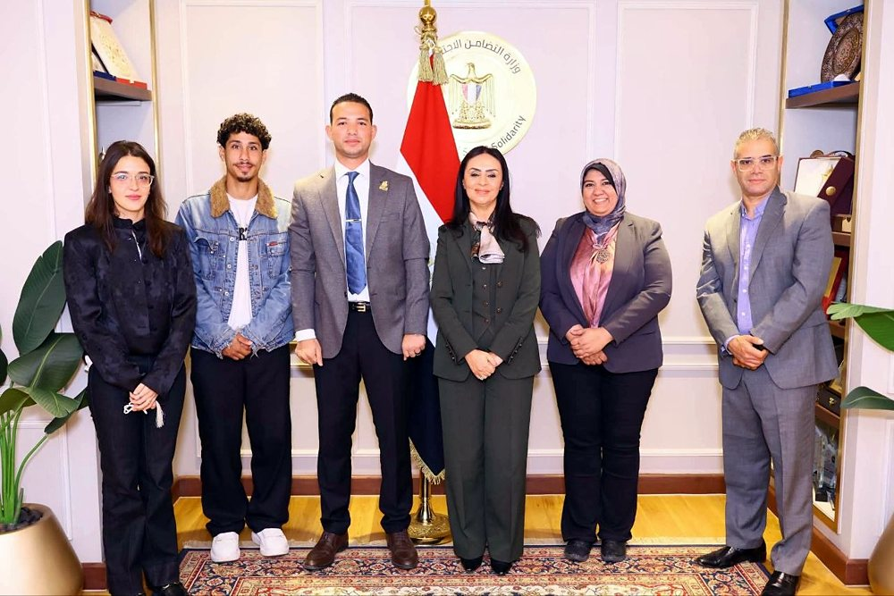
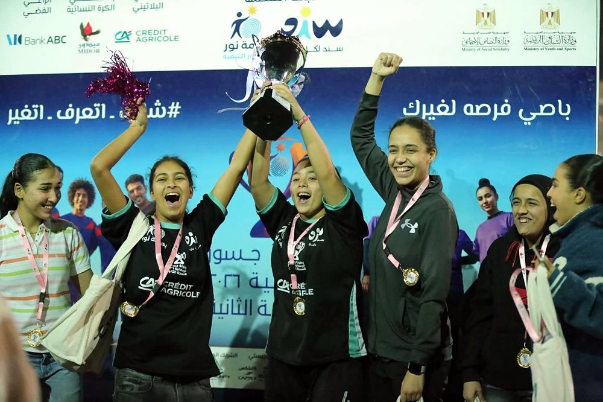
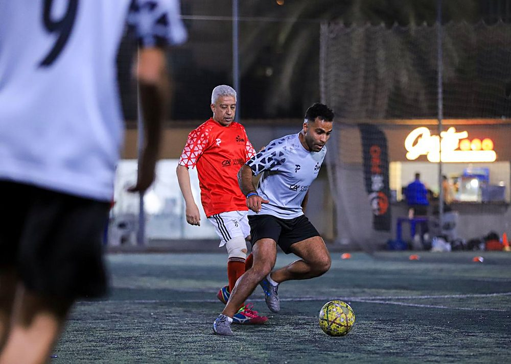
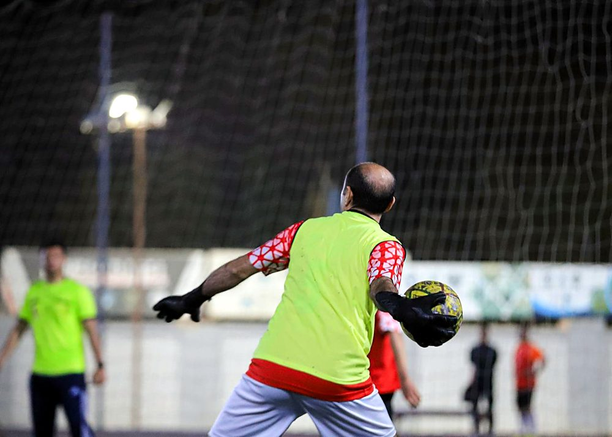

We work across Egypt to include and empower children and graduates of care homes, with a vision led by the people at the heart of the cause themselves. We create real paths to independence through the "Jusoor" initiative and our development programs, crowned by the Sharjah Government Communication Award 2026.


Every team is half young people from care homes and half company employees. They play on one pitch for one goal, meet without barriers, and see each other for who they are. Women have their own dedicated track.
2026 edition: Cairo, Giza, Qalyubia, Sharqia, Beheira, Menoufia and Minya.
 Watch the video
Watch the videoThe tournament grows to 7 governorates, with 16 teams in the men's tournament and 8 in the women's after the merge. It adds the Jusoor national team for under-17s, plus job, training and professional pathways.


Our mission is to move young people in care toward independence and active participation in society.
Discovering talent, building professional pathways and developing skills through the Jusoor Tournament, the Jusoor national team and individual sports.
A dedicated track for female care leavers, supporting their presence in sport and in child-protection forums.
Jobs and vocational training, interest-free small-business loans, living essentials that support independence, and basic services.
Psychological, legal and social support, help resolving paperwork problems, medical convoys and family support.
The Basmat Nour Observatory, positive presence in drama and the arts, and awareness campaigns in schools, universities and the media.
Turning young people into ambassadors and governorate representatives who carry their cause to forums and conferences.
We welcome sponsors for the Jusoor Ramadan Tournament 2027 and support for Egypt's delegation to Warsaw. We send sponsorship package details on request.
Nour Shabaan won the award in the category of best youth communication initiative, supervised by the Sharjah Government Media Office. He was honored by Dr. Maya Morsy, Egypt's Minister of Social Solidarity.

